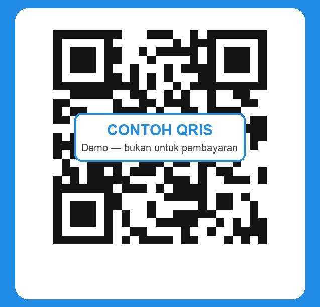

Silakan transfer pembayaran ke salah satu rekening bank resmi Toko Kriya Sidoarjo:
* Verifikasi pembayaran transfer bank diproses otomatis dalam 1-5 menit kerja.

Pindai kode QRIS di samping menggunakan aplikasi dompet digital atau mobile banking berstandar Bank Indonesia (ASPI).
Siapkan uang tunai pas sejumlah Rp 1.010.000 saat kurir mengantarkan pesanan kriya ke alamat rumah Anda. Pesanan Anda akan segera dipersiapkan dan dikirim dari pengrajin lokal Sidoarjo.
Arahkan kamera ponsel dari aplikasi DANA, GoPay, OVO, ShopeePay, atau Mobile Banking ke kode di atas.